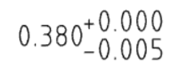
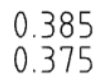
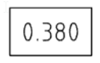

Q : Which four views are included in the “Four View Layout(四視圖佈局)” in Onshape?
A : Front, Top, Right, Isometric(等角視圖).
Q : What is the difference between a Dimension and a tolerance?
A : The dimension is the nominal (“perfect”) measurement of our geometry, whereas the
tolerance is the acceptable variation(變化) of our geometry allowed during manufacturing.
Q : Name & Describe the following Dimension/Tolerance types:
A : Deviation(偏差) - This communicates the allowable +/- deviation from the nominal dimension(標稱尺寸).

Limits - This communicates the allowable limits of the dimension (the nominal is not shown).

Basic - This has no tolerance, and therefore may only be used when GD&T is utilized to(用來) define the tolerance range.

Q : What is the real-world implication(含義) of changing a standard dimension on an engineering print from “1.750” to “1.75”?
A : It means that we are changing the tolerance to a “looser” one (wider allowable range) as defined by the tolerance block in the drawing format.
Q : Do Onshape drawing views update automatically? Why or why not?
A : No they do not, as this gives the designer control whether they want the drawing to
reflect the latest design or not. It is a form of revision(調整) control, since Onshape does not
have (or need) a formal PDM system.